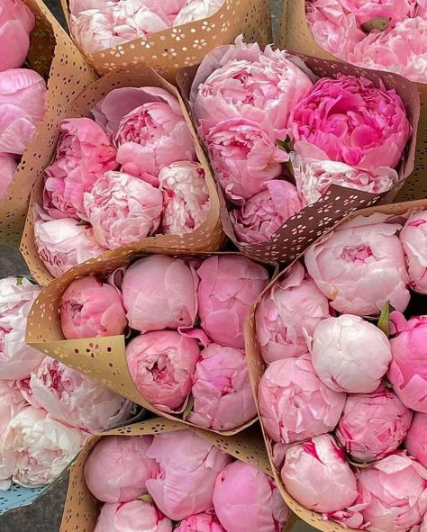

Моя автобіографія:
Я – Софія. Люблю коли мене називають Софа. Мені 19, 23 січня виповниться цілих 20 (звучить трохи страшно і надто по-дорослому). Навчаюсь у Львівській національній академії мистецтв (ЛНАМ) на факультеті графічного дизайну і дуже цьому рада. Люблю подорожувати, об'їздила багато країн Європи, хотіла б побувати в Франції (Париж) і полетіти в Америку. Люблю також дивитися різні фільми, тусити з друзями і просто насолоджуватись життям.
Переглядай інформацію швидше тут:
Мої хобі і просто те, що подобається:
- дизайн і все що з ним зв'язане (особливо подобається саме веб);
- сучасні танці (на жаль зараз немає часу ними займатись), займалась чотири роки тому стилем jazz funk, хотіла б навчитись танцювати і в інших стилях;
- спорт, стараюсь виділяти час на спортзал, адже це дуже важливо;
- фотографувати, на телефон фоткаю все, що бачу і цих фото дуже і дуже багато. Хотіла б навчитись робити це набагато професійніше та знати більше;
- люблю котів, а особливо шотландських висловухих (собак і хом'ячків теж);
- обожнюю суші, без них не можу уявити своє життя;
- дуже люблю піони і піоновидні троянди;
- Великобританія – моя любов, особливо Лондон!

Цілі на цей семестр навчання:
- Вдосконалювати себе у веб-дизайні.
- Навчитись професійно користуватись фотоапаратом.
- Покращити свої навички по верстці і знання по InDesign.
- Вивчити багато нових фішок програми Illustrator і Photoshop.
- Робити все вчасно і продуктивно!
Декілька моїх фото (натиснувши на них можна перейти на мій інстаграм):